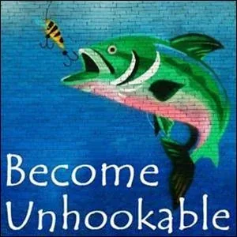

9 Gaps on Strikingly
[

](http://becomeunhookable.mystrikingly.com/)
SOME THINGS THAT HAPPENED THAT DAY MAY STILL HANG ON YOU. THROUGH THIS EXPERIMENT YOU CAN TRACK THEM DOWN AND LET THEM GO. / GAP IN TIME
Matrix Code 9GAPSxxx.01
When you have gone to bed at night, go back through the day.
Start from where you are right now and, piece by piece, go back through the whole day to the moment when you woke up in the morning.
Do this in a kind of time-lapse tempo.
All stations, all events and all observations you let be alive once again for a short time and then let them go.
You let them go, they rise like a helium-filled balloon and are finally gone.
When you reach the point where you woke up in the morning, you also let that moment rise and go.
Then, in one big effortless leap, you jump back into your bed into the now and eventually fall asleep.
This experiment is also a quite wonderful falling asleep exercise that I have been transmitted by Michael Samoto Hallinger.
Do the experiment for 10 days.
After completing this experiment, please register Matrix Code 9GAPSxxx.01 in your free account at StartOverxyz.
This Experiment is worth 1 Matrix Point.
[
](http://18boxes.mystrikingly.com/)
IF YOU HAVE A GAP IN KNOWLEDGE AND DON'T KNOW WHAT'S THERE AND HOW TO PROCEED, THAT'S NO REASON TO STOP GOING / GAP IN KNOWLEDGE
Matrix Code 9GAPSxxx.02
Pick up a book that you want to read now.
Look up how many pages the book has. Divide the total number of pages by 2 and start reading the book at that page.
Read it to the end and then decide if you will read the first half as well.
Suppose the book has 422 pages. So start reading at page 211, read to page 422, and then make a decision.
You will probably come across quite a few gaps in your knowledge, since you haven't read the first half of the book.
What are your strategies for dealing with these gaps? Write what you notice in your Beep! Book.
What do your strategies say about your box? There are 18 standard boxes. Read through the page on the 18 boxes.
What feelings do you have when you don't know and don't understand because you don't know?
Write down the feelings.
After completing this experiment, please register Matrix Code 9GAPSxxx.02 in your free account at StartOverxyz.
This Experiment is worth 1 Matrix Point.
[

](http://asking.mystrikingly.com/)
IF YOU ARE A QUESTION, THE ANSWER COMES TO YOU. / GAP IN RESONANCE FIELD
Matrix Code 9GAPSxxx.03
Scroll through the alphabetical list of the spaceport website.
If you come to a page whose title you don't understand and about whose content you know nothing, you have encountered a knowledge gap.
Don't open the page, instead write the name of the page in your Beep! Book. Also, write the name on your bathroom mirror, on 10 pieces of paper that you distribute in different places in your home, and on a piece of paper that you stick to the side of your computer screen.
For 9 days, collect all the information that washes over to you from ECCO about this page, the content of which you know nothing about.
By that I mean, let the information come to you, don't actively research it. When you do get information, however, write it down.
Gather the information like a squirrel that finds nuts along the way without having looked for them.
On the 10th day, open the page and read through everything.
Do the experiments you find on the page.
After completing this experiment, please register Matrix Code 9GAPSxxx.03 in your free account at StartOverxyz.
This Experiment is worth 1 Matrix Point.
[
](http://becomeabundance.mystrikingly.com/)
CELEBRATE YOURSELF FOR WHAT YOU SEE IN OTHERS / GAP IN IDENTITY
Matrix Code 9GAPSxxx.04
For three days, do the following experiment:
For three days, write in your Beep! Book what you appreciate and like about other people. This can be about all 5 bodies.
"I like the way she dresses. / I appreciate his compassion for others. / I am touched by how vulnerable she shows herself to be. / Her apple pie is sooo delicious."
Write it all down for three days, unsorted and unintentional.
On the evening of the third day, call 3 people in a row to tell them all the things you appreciate and celebrate about yourself.
Celebrate in yourself unsorted and unintentionally the points you wrote down about others.
"I like the way I dress. I value my compassion for others. I am touched by how vulnerable I show myself to be. My apple pie is sooo delicious."
As you do this, consciously let each sentence land in you one at a time.
Let it melt slowly on your tongue like strawberry ice cream before you say it.
After completing this experiment, please register Matrix Code 9GAPSxxx.04 in your free account at StartOverxyz.
This Experiment is worth 1 Matrix Point.
[
](http://consciousfear.mystrikingly.com/)
FEEL THE FEAR THAT ARISES WHEN NO ONE SAYS ANYTHING ANYMORE. FEEL THE FEAR OF BEING INTERRUPTED AND NOT BEING ABLE TO FINISH. / GAP IN COMMUNICATION
Matrix Code 9GAPSxxx.05
Pause for breath after each sentence. When your spoken sentence is over, exhale all the remaining air that is still in your lungs. Then inhale and only then continue speaking.
This creates a pause of several seconds (it should be about 3-5).
In this gap, the other person might begin to speak, even though you haven't said everything you wanted to say.
The experiment can now continue in several ways:
- Let the other person speak and wait for your turn to speak again.
- Interrupt the other person by saying that you haven't finished yet and that you will now finish your speech. Then continue speaking, pausing for breath as discussed.
- Inform the other person about your experiment, talk to them about the feelings you are having.
- Do not inform the other person and just observe what continues to happen. Irritation may arise in the other person.
Observe and do not interfere.
Observe what is happening. What are your feelings, why do you have them? What do they have to say to you?
It could be that you remember situations long ago (for example, from your school days) when you were a child.
It could be that your feelings are old emotions and invitations to go into an Emotional Healing Process.
Write down the emotions and do these healing processes at the next opportunity.
After completing this experiment, please register Matrix Code 9GAPSxxx.05 in your free account at StartOverxyz.
This Experiment is worth 1 Matrix Point.
[

](http://changeyourmind.mystrikingly.com/)
SPEND A DAY NOT TALKING / GAP IN NOISES
Matrix Code 9GAPSxxx.06
Do not speak for one day.
You can wear a button with the inscription: I DO NOT SPEAK TODAY.
If you don't, your experiment may take a different course, that's all.
You can also wear the button sometimes and sometimes not, maybe the dangerousness of the experiment changes with the choice to wear the button.
Carry your Beep! Book with you. You can't talk anyway, so you can write more.
Write down what you feel, notice, discover.
Write down how your focus changes.
Maybe your perception changes, as if you hear, see or touch differently. How do you perceive the other people around you that day?
After completing this experiment, please register Matrix Code 9GAPSxxx.06 in your free account at StartOverxyz.
This Experiment is worth 1 Matrix Point.
[
](http://gameworldconsulting.mystrikingly.com/)
EXPLORE THE ENTRANCES AND EXITS TO GAMEWORLDS. FIND THE FASTEST WAY THROUGH. / GAP IN GAMEWORLDS
Matrix Code 9GAPSxxx.07
Game worlds are self-contained areas.
Often there are doors that lead into a game world. Sometimes you can exit through the same door you entered through. However, there may also be an extra door for going out.
In large supermarkets it is often the case that once you have gone in through the entrance door, you have to walk through the whole supermarket to get to the exit door.
This is a so-called marketing strategy, which is supposed to make you look at a million offers on your way to the exit and buy a part of them or at least not forget them for a long time.
This is a manipulation strategy if you ask me.
Walk through the front door into a large supermarket and do the following experiments:
- Find the shortest path to the nearest exit door. When you're back outside, go through the front door again and try a different route. Stop when you have found the fastest and shortest way.
- Stand at the front door and observe the people entering the supermarket. What do you notice in their faces, their walk, their communication with each other? How aware are they of the fact that they are entering a gigantic game world?
- Stand still until some of the people you observed going in come out through the exit door. What do you notice? What changes do you notice in them?
- Observe and write in your Beep! Book as you enter: What does it smell like in the game world? Is it warmer or colder than outside? Is it lighter or darker? What do you hear there? What do you feel when you enter the game world?
After completing this experiment, please register Matrix Code 9GAPSxxx.07 in your free account at StartOverxyz.
This Experiment is worth 1 Matrix Point.
[
](http://wakingstate.mystrikingly.com/)
WRITE AN ELEVATOR PITCH ABOUT YOUR LIFE. / GAP IN THOUGHTWARE
Matrix Code 9GAPSxxx.08
An elevator pitch lasts 60 seconds.
The elevator pitch was originally the idea of American salespeople who wanted to convince customers and bosses of their idea during the duration of an elevator ride. Because the ride in American high-rises rarely lasted longer, all the relevant information had to fit into this time window: 60 seconds.
- Write a pitch about why you are at this exact place in your life.
- Write a pitch about your next worktalk, your next training.
- Write a pitch about who you really are and what your job is.
Practice until you can speak each pitch by heart, checking for the 60-second time limit.
Deliver each pitch several times and on different occasions.
In elevators, on car rides with others, in teams, at a pedestrian light that is red, and in line to check out at the grocery store.
After completing this experiment, please register Matrix Code 9GAPSxxx.08 in your free account at StartOverxyz.
This Experiment is worth 1 Matrix Point.
[

](http://speakings.mystrikingly.com/)
SPEAK TO YOUR TEAM BY SPEAKING INTO THE GAP BETWEEN PEOPLE. / GAP IN SPACE
Matrix Code 9GAPSxxx.09
Explore how what you say lands in people's minds when you speak to the whole group.
- Speak to a group of at least three people by speaking into the gaps between people.
- Speak to a group using the same wording and phrases, shooting your words like arrows directly at each person.
What happens? What is the response? What lands with each person? Get the information and feedback from people. What is a group? How can you speak to a group?
After completing this experiment, please register Matrix Code 9GAPSxxx.09 in your free account at StartOverxyz.
This Experiment is worth 1 Matrix Point.